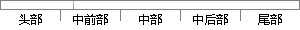

点选用户页面，会出来搜索到的用户的记录。
片段位置图

相似结果|
相似片段 1：在页面显示记录的详细信息。同时将该条记录id号写如session(判断是否激活下方功能菜单)。绑定用户组：点选“代理组”菜单，后台取的所有糟户缎(集合1)以及点选用户所属于的用户组(集合2)。用树组件创
相似片段 2：的初次搜索当该用户利用搜索引擎找到自己需要的网页后，开始浏览，这时搜索引擎利用其对用户兴趣的学习记录，在之后的搜索中将能体现出个性化的建议内容。例如用户对碳素商情相关的网页进行浏览，下图为用户点选的网站
相似片段 3：点选或搜索时，我们可以认为用户并没有明确的购买意愿，此时网页推荐的内容是基于用户近期的页面搜索，这些内容被认为是潜在的用户目标。图5．21则是在用户进入到了产品的内容页面，此时我们认为用户已有较明确
相似片段 4：企图在地图中定位“北京站”，再通过搜索“北京南站”，认为也许会出来相关信息，但点击后的结果页面令用户无法解释，不知道如何正确使用，放弃；●依次扫描地图下方的圆形功能按钮，没有找到有用功能，用户彻底失望，退出站点，任务3失败。
相似片段 5：的详情页面，展示具体属性信息给用户。该面板中的搜索结果状态栏只提供是否查到相应对象的提示信息。（2）“项目批地”查询本模块实现的功能与“基础信息”基本类似，“搜索”按钮实现的就是由属性到地图的查询，“点选”按钮实现的就是由地图到属性的查询。
|
※ 片段修改建议 ※
近似词参考：- 搜索：搜刮 搜寻
- 记录：记实 纪录 记载
系统自动生成语句：点选用户页面，会出来搜刮到的用户的记实。
注：本片段修改建议为系统自动生成，仅供参考。